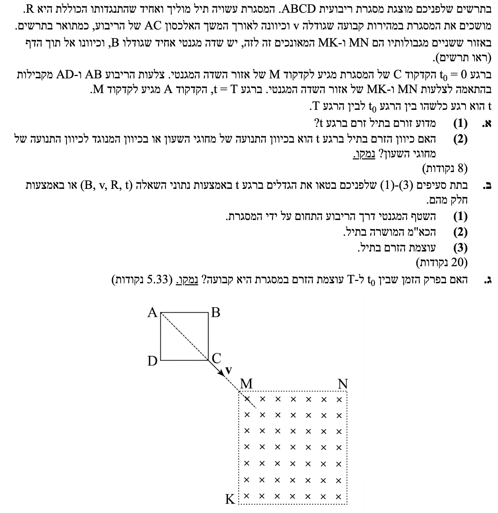
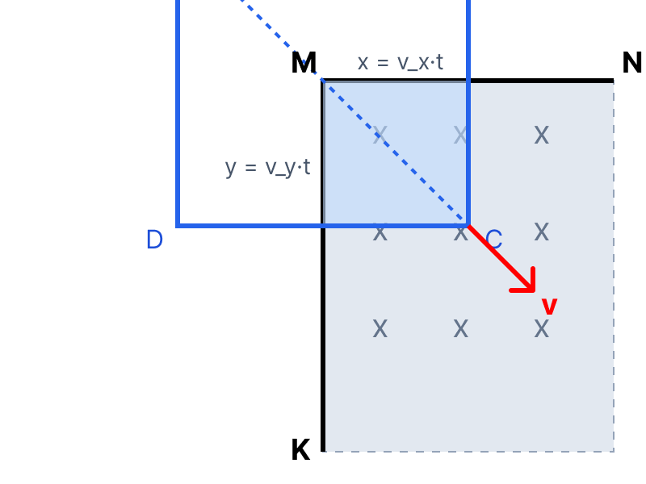

פתרון מודרך, צעד-אחר-צעד

חוק פאראדיי להשראה אלקטרומגנטית, חוק לנץ (הקובע שהזרם המושרה יתנגד לשינוי בשטף).
כאשר המסגרת הריבועית נעה לתוך אזור השדה המגנטי, השטח של המסגרת אשר "טבול" בתוך השדה (השטח \( A \) שדרכו עוברים קווי השדה) הולך וגדל. מכיוון שעוצמת השדה \( B \) קבועה, הגדלת השטח גורמת לגידול בשטף המגנטי (\( \Phi_B \)) העובר דרך המסגרת. על פי חוק פאראדיי, שינוי בשטף המגנטי לאורך זמן יוצר כוח אלקטרו-מניע מושרה (כא"מ מושרה, \( \varepsilon \)). מכיוון שהמסגרת עשויה תיל מוליך היוצר מעגל סגור, הכא"מ הזה מזרים זרם חשמלי במסגרת.
השדה המגנטי החיצוני מכוון אל תוך הדף. כאמור, ככל שהמסגרת נכנסת לשדה, השטף המגנטי פנימה הולך וגדל. על פי חוק לנץ, הזרם המושרה יזרום בכיוון שייצור שדה מגנטי מושרה שיתנגד לשינוי זה. כלומר, המסגרת תשאף "להחליש" את התחזקות השדה פנימה, ולכן תייצר שדה מגנטי משלה שכיוונו אל מחוץ לדף.
נשתמש בכלל יד ימין עבור סליל/כריכה (אגודל מחוץ לדף, ארבע האצבעות מראות את כיוון הזרם), ונקבל שכדי לייצר שדה אל מחוץ לדף, הזרם חייב לזרום נגד כיוון השעון.
פירוק וקטור המהירות לרכיבים, שטחים של צורות גיאומטריות (מלבן/ריבוע), חוק אוהם למעגל שלם (כאשר הכא"מ משמש כמתח).
תרשים עזר: כניסת המסגרת לשדה (מבט מלמעלה)

המסגרת נעה לאורך האלכסון. זווית האלכסון בריבוע היא \( 45^\circ \) ביחס לצלעות. מכיוון שנתון שצלעות המסגרת מקבילות לגבולות השדה (כלומר, המסגרת אינה "מסובבת"), ניתן לפרק את המהירות לשני רכיבים, אופקי ואנכי:
ברגע \( t \), המרחק שעבר קודקוד \( C \) פנימה לתוך השדה בציר האופקי הוא \( x = v_x t \) ובציר האנכי הוא \( y = v_y t \). מכיוון ששני הרכיבים שווים, הצורה החודרת לשדה (בצבע תכלת בתרשים) היא בעצמה ריבוע שצלעו היא \( \frac{v}{\sqrt{2}}t \).
נחשב את שטח המסגרת שנמצא בתוך השדה (השטח הפעיל \( A \)):
השדה \( B \) מאונך למישור המסגרת (\( \alpha = 0^\circ \), \( \cos(0^\circ) = 1 \)), ולכן השטף המגנטי דרך המסגרת הוא:
על פי חוק פאראדיי (ניקח ערך מוחלט שכן מבוקש רק "כא"מ" כגודל, את הכיוון כבר מצאנו):
מכיוון ש-\( B, v \) הם קבועים, נגזור רק לפי \( t \):
ההתנגדות הכוללת של המסגרת היא \( R \). על פי חוק אוהם, עוצמת הזרם מתקבלת מחלוקת הכא"מ הכולל בהתנגדות הכוללת:
על פי הביטוי שהתקבל בסעיף ב'(3):
מכיוון שהגדלים \( B \) (השדה), \( v \) (מהירות המשיכה) ו-\( R \) (התנגדות המסגרת) כולם קבועים במהלך התנועה, הגודל שבתוך הסוגריים הוא קבוע. מכאן אנו רואים שעוצמת הזרם \( I \) נמצאת ביחס ישר (פרופורציונלית) לזמן \( t \).
לכן, ככל שהזמן עובר, הזרם אינו נשאר קבוע אלא הולך וגדל ליניארית.
לא, עוצמת הזרם אינה קבועה. היא גדלה ביחס ישר לזמן \( t \).